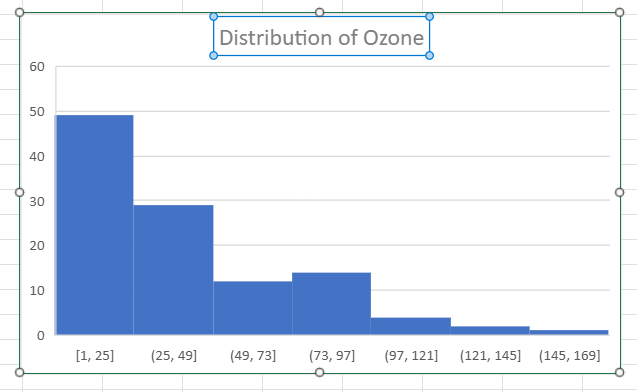
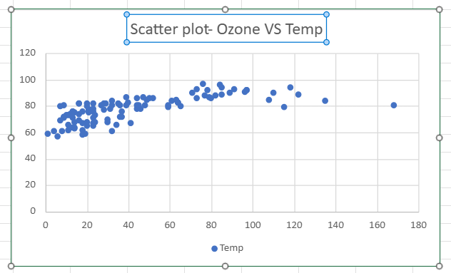
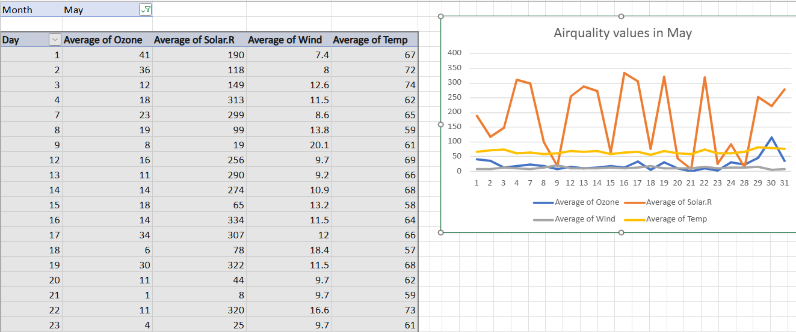
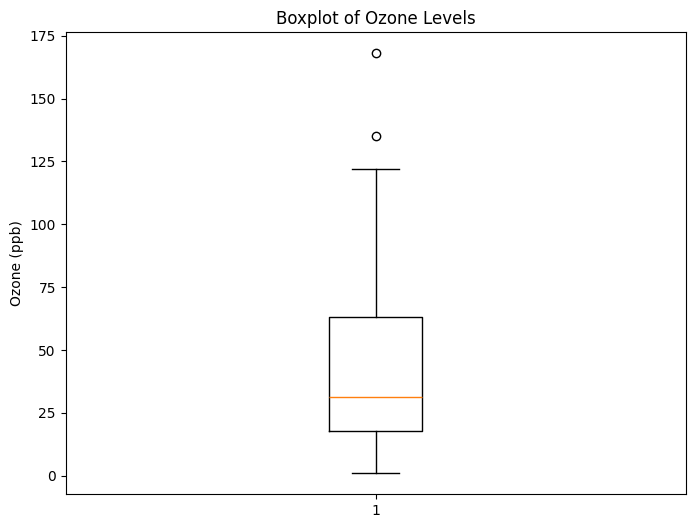
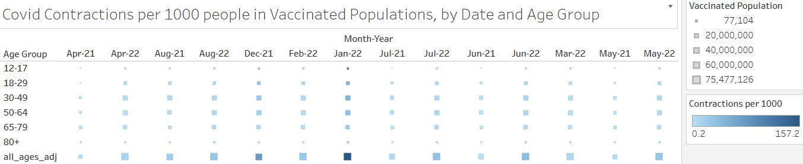
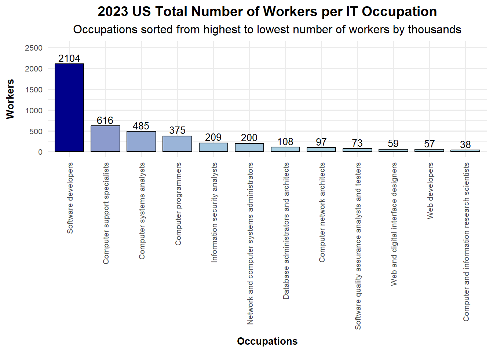

library(readxl)
data <- read_excel("cpsaat39.xlsx", range = "A71:B82", col_names = c("Occupations", "Total Number of Workers"))3 Savannah
Savannah
3.1 Week 1
excel
(note that I was not able to upload the photos to here) ### Wednesday
ACCESS THE WEB VERSION OF EXCEL THROUGH ONEDRIVE
-cell is identified by a column letter and row number and holds a piece of data.
-column is a vertical set of cells, identified by a letter.
-row is a horizontal set of cells, identified by a number.
BASIC FUNCTIONS=SUM() =AVERAGE() =MAX() =MIN()
EXCEL NOTESdouble click corner of box around a cell to make the formula go apply to the whole column
use control to select multiple specific cells/columns
shift right control down to select
use <> to input a link in Quarto document
use to input a screenshot in a Quarto document MUST BE IN THE SAME FOLDER
BASIC PLOTSSCATTER PLOT EXAMPLE
3.1.1 Friday
My data set is Rates of COVID-19 Cases or Deaths by Age Group and Vaccination Status from the Centers for Disease Control and Prevention website.
DESCRIPTION OF DATA SETThis data set was posted on October 21, 2022 and was revised on February 22, 2023. The data reflect cases among people with a positive specimen collection date through September 24, 2022, and deaths among people with a positive specimen collection date through September 3, 2022.
The data was provided by the CDC COVID-19 Response, Epidemiology Task Force.
This data set has 1,591 rows and 16 columns.
COLUMNS IN DATA SETOUTCOME: case or death (text)
MONTH: corresponding month to the MMWR week- MMM YYYY (text)
MMWR week: the morbidity and mortality weekly report- YYYYWW (text)
AGE GROUP: 0-5 (4 yrs), 5-11, 12-17, 18-29, 30-49, 50-64, 65-70, 80+ (text)
VACCINE PRODUCT: Janssen, Moderna, Pfizer, all (text)
VACCINATED WITH OUTCOME: weekly count of vaccinated individuals that correspond with an outcome (number)
FULLY VACCINATED POPULATION: cumulative weekly count of the population vaccinated (number)
UNVACCINATED WITH OUTCOME: weekly count of unvaccinated individuals that correspond with an outcome (number)
UNVACCINATED POPULATION: cumulative weekly count of the population un-vaccinated (number)
CRUDE VAX IR: incident rate for vaccinated population per 100,000 (number)
CRUDE UNVAX IR: incident rate for un-vaccinated population per 100,000 (number)
CRUDE IRR: incident rate ratio (un-vaccinated : vaccinated) (number)
AGE ADJUSTED VAX IR: incident rate by age for vaccinated population per 100,000 (number)
AGE ADJUSTED UNVAX IR: incident rate by age for un-vaccinated population per 100,000 (number)
AGE ADJUSTED CRUDE IRR: incident rate ratio by age (un-vaccinated : vaccinated) (number)
CONTINUITY CORRECTION: indicates whether the data was adjusted with the assumption that at least 5 percent of the population in the jurisdiction is un-vaccinated (number)
dataset link: https://data.cdc.gov/Public-Health-Surveillance/Rates-of-COVID-19-Cases-or-Deaths-by-Age-Group-and/3rge-nu2a/about_data
VISUALIZATIONS IN EXCEL OF DATASETHISTOGRAM
This visualization shows the weekly count of vaccinated individuals who have either the outcome of a case of covid or death by covid, grouped by age.
LINE PLOT
This visualization shows a cumulative weekly count of the fully vaccinated population (teal) versus the un-vaccinated population (orange).
3.2 week 2
3.2.0.1 EXCEL: PIVOT TABLE AND CHART
3.2.0.2 Documentation
I am using the airquality data set which lists the daily numeric values of Ozone, Solar Radiation, Wind, and Temperature from the months of May to September in 1973 from the state of New York. The Ozone data was measured from Roosevelt Island, the Solar Radiation data was measured from Central Park, and the both the Wind and Temperature data was measured from the LaGuardia airport. This data was obtained from the New York State Department of Conservation, which provided the Ozone data, as well as the National Weather Service, which provided the meteorological data including the temperature, wind, and solar radiation values.
I used excel to clean the data by removing all the rows with NA values, and performed exploration analysis with histograms and a pivot table and chart.
3.2.0.3 Ozone Histogram
In-class example

3.2.0.4 Ozonve vs Temp Scatter Plot
In-class example

3.2.0.5 My first Pivot Table and Chart

From my pivot table, I was able to take all the numerical data from the airquality data set and use a stacked line chart to compare the values of Ozone, Solar Radiation, Wind, and Temperature per day in the month of May. The line chart is colored by topic to make it easy to visually compare each topic as it changes per day. From this visualization, I was able to observe that the Wind and Temperature values remained relatively even throughout the month, while the Solar Radiation values became occasionally unstable, and the Ozone values changed drastically throughout the month.
3.2.0.6 INDIVIDUAL PROJECT DOCUMENTATION
My data set is Rates of COVID-19 Cases or Deaths by Age Group and Vaccination Status from the Centers for Disease Control and Prevention website.
3.2.0.7 Description of data set
This data set was posted on October 21, 2022 and was revised on February 22, 2023. The data reflect cases among people within various age groups with a positive specimen collection date through September 24, 2022, and deaths among people within those age groups with a positive specimen collection date through September 3, 2022.
The data was provided by the CDC COVID-19 Response, Epidemiology Task Force.
This data set has 1,591 rows and 16 columns.
3.2.0.8 Purpose of data set
This information can be used by the CDC and pharmaceutical companies to see how affective the vaccine is in preventing Covid-19 cases, as well as to see if the vaccine helps prevent death once the virus is contracted.
This information can also be used to see if the vaccine is more correlated to preventing deaths or cases within specific age groups.
This information can be used by hospitals to predict the necessary number of beds and ventilators needed for patients.
This information can be used by insurance companies to determine how much money should be put aside to cover health/life insurance costs.
3.2.0.9 Variables in data set and data type
OUTCOME: case or death (text)
MONTH: corresponding month to the MMWR week- MMM YYYY (text)
MMWR week: the morbidity and mortality weekly report- YYYYWW (text)
AGE GROUP: 0-5 (4 yrs), 5-11, 12-17, 18-29, 30-49, 50-64, 65-70, 80+ (text)
VACCINE PRODUCT: Janssen, Moderna, Pfizer, all (text)
VACCINATED WITH OUTCOME: weekly count of vaccinated individuals that correspond with an outcome (number)
FULLY VACCINATED POPULATION: cumulative weekly count of the population vaccinated (number)
UNVACCINATED WITH OUTCOME: weekly count of unvaccinated individuals that correspond with an outcome (number)
UNVACCINATED POPULATION: cumulative weekly count of the population un-vaccinated (number)
CRUDE VAX IR: incident rate for vaccinated population per 100,000 (number)
CRUDE UNVAX IR: incident rate for un-vaccinated population per 100,000 (number)
CRUDE IRR: incident rate ratio (un-vaccinated : vaccinated) (number)
AGE ADJUSTED VAX IR: incident rate by age for vaccinated population per 100,000 (number)
AGE ADJUSTED UNVAX IR: incident rate by age for un-vaccinated population per 100,000 (number)
AGE ADJUSTED CRUDE IRR: incident rate ratio by age (un-vaccinated : vaccinated) (number)
CONTINUITY CORRECTION: indicates whether the data was adjusted with the assumption that at least 5 percent of the population in the jurisdiction is un-vaccinated (number)
3.2.0.10 Link to data set
3.3 Week 3
3.3.1 Wednesday
3.3.2 Friday
3.4 Week 4
3.4.1 Wednesday and Friday
import numpy as np
arr = np.array([1,2,3,4,5])my_list = [1, 2, 3, 4, 5]import pandas as pd
data = {'Ozone': [41, 36, 12], 'Temp': [67, 72, 74]}
df = pd.DataFrame(data)df = pd.read_csv('C:\\Users\\rdudley\\Downloads\\airquality_datasets.csv')# Summary of the dataset
print(df.info())
print(df.describe())<class 'pandas.core.frame.DataFrame'>
RangeIndex: 153 entries, 0 to 152
Data columns (total 6 columns):
# Column Non-Null Count Dtype
--- ------ -------------- -----
0 Ozone 116 non-null float64
1 Solar.R 146 non-null float64
2 Wind 153 non-null float64
3 Temp 153 non-null int64
4 Month 153 non-null int64
5 Day 153 non-null int64
dtypes: float64(3), int64(3)
memory usage: 7.3 KB
None
Ozone Solar.R Wind Temp Month Day
count 116.000000 146.000000 153.000000 153.000000 153.000000 153.000000
mean 42.129310 185.931507 9.957516 77.882353 6.993464 15.803922
std 32.987885 90.058422 3.523001 9.465270 1.416522 8.864520
min 1.000000 7.000000 1.700000 56.000000 5.000000 1.000000
25% 18.000000 115.750000 7.400000 72.000000 6.000000 8.000000
50% 31.500000 205.000000 9.700000 79.000000 7.000000 16.000000
75% 63.250000 258.750000 11.500000 85.000000 8.000000 23.000000
max 168.000000 334.000000 20.700000 97.000000 9.000000 31.000000import matplotlib.pyplot as plt
# Ozone Histogram
plt.figure(figsize=(8, 6))
plt.hist(df['Ozone'].dropna(), bins=20, color='blue', edgecolor='black')
plt.title('Distribution of Ozone Levels')
plt.xlabel('Ozone (ppb)')
plt.ylabel('Frequency')
plt.show()
# Temp Histogram
plt.figure(figsize=(8, 6))
plt.hist(df['Temp'].dropna(), bins=20, color='orange', edgecolor='black')
plt.title('Distribution of Temperature')
plt.xlabel('Temperature (°F)')
plt.ylabel('Frequency')
plt.show()

# Boxplot for Ozone
plt.figure(figsize=(8, 6))
plt.boxplot(df['Ozone'].dropna())
plt.title('Boxplot of Ozone Levels')
plt.ylabel('Ozone (ppb)')
plt.show()
# Boxplot for Temp
plt.figure(figsize=(8, 6))
plt.boxplot(df['Temp'].dropna())
plt.title('Boxplot of Temperature')
plt.ylabel('Temperature (°F)')
plt.show()

import seaborn as sns
# Scatter plot with regression line
plt.figure(figsize=(10, 6))
sns.scatterplot(x='Temp', y='Ozone', hue='Month', data=df)
plt.title('Temperature vs Ozone Levels by Month')
plt.xlabel('Temperature (°F)')
plt.ylabel('Ozone (ppb)')
plt.show()
# Correlation matrix
corr = df[['Ozone', 'Temp', 'Wind']].corr()
sns.heatmap(corr, annot=True, cmap='coolwarm')
plt.title('Correlation Matrix')
plt.show()

3.5 Week 5

3.6 Week after fall break
3.7 Second semester schedule
All charts made in r studio or shiny and 1-3 sentence summary with each visualization
Nov 2: create a bar chart comparing the number of workers, and their occupation
Nov 9: create a stacked area plot comparing gender distribution of workers in each occupation
Nov 16: create a dot plot comparing weekly earnings by their occupation
Nov 23: create a scatter plot comparing median weekly earnings vs number of workers
Nov 30: create a line chart comparing the gender pay gap across occupations
(For this weeks assignment, everyone needed to find a dataset from our datasource and give a summary about it.)
3.8 October 28th
3.9 Bar Chart
Variables: Occupation and Total Number of Workers
3.9.1 Import dataset
3.9.2 Create Visualization
library(ggplot2)
ggplot(data, aes(x = reorder(Occupations, -`Total Number of Workers`),
y = `Total Number of Workers`,
fill = `Total Number of Workers`)) +
geom_bar(stat = "identity", color = "black", width = 0.8) + # Add color and border
geom_text(aes(label = `Total Number of Workers`),
vjust = -0.3, # Move labels higher above the bars
color = "black", size = 3.5) + # Slightly larger font size for labels
scale_fill_gradient(low = "lightblue", high = "darkblue") + # Gradient color for bars
labs(title = "2023 US Total Number of Workers per IT Occupation",
subtitle = "Occupations sorted from highest to lowest number of workers by thousands",
x = "Occupations",
y = "Workers") +
ylim(0, max(data$`Total Number of Workers`) * 1.2) + # Expand y-axis limits
theme_minimal(base_size = 12) + # Increase base font size
theme(
axis.text.x = element_text(angle = 90, hjust = 1, vjust = 0.5, size = 8), # Adjust size for x-axis labels
axis.text.y = element_text(size = 8), # Adjust size for y-axis numbers
axis.title.x = element_text(size = 10, margin = margin(t = 10), face = "bold"), # X-axis title size and style
axis.title.y = element_text(size = 10, margin = margin(r = 10), face = "bold"), # Y-axis title size and style
plot.title = element_text(face = "bold", size = 14, hjust = 0.5), # Center-align title
plot.subtitle = element_text(size = 12, hjust = 0.5), # Center-align subtitle
legend.position = "none" # Remove legend
)